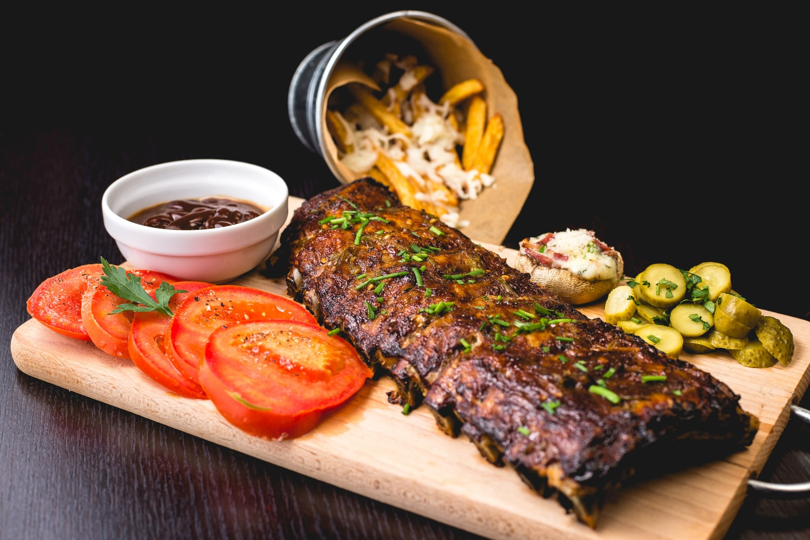
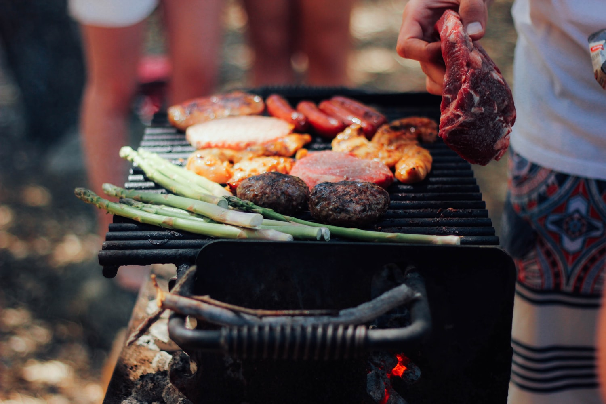

About JM Meat Market
Nestled in the center of beautiful Caldwell county in the foothills of the Central Texas Hill Country you will find the hidden treasure that is JM Meat Market. “JM Meat Market” began back in 1996 when dat boii JafettyGUAP bought a little country store to escape the hustle and bustle of The mean streets of the 512. In 1997, JafettyGUAP sold the business to his brother Dylan and his dad Job. Dylan and Job continue to run the store and custom meat shop along with several of homeboys from the 512. We enjoy giving personalized service to each customer that walks through the door and are proud of the friendly service we offer. We are proud of the friendly service we offer and strive to be on a “first name basis” with all of our patrons, both old customers and new.
CUSTOM CUTTING
We have been custom cutting for local farmers since 1996. In 2015, an all-new custom plant was built to serve you more efficiently. We harvest animals on site and have a large hanging cooler to age carcasses. We also offer state of the art smokehouses allowing us to provide more products in a controlled atmosphere. Your meat arrives to you boxed, frozen and ready for your freezer. If you need connections for locally grown beef and pigs we have you covered. At JM Meat Market we strive to give each customer the very best personal services possible. Our customers are extremely important to us.
HOURS
JM Meat Market 6525 Number 4 Road, San Marcos, TX, 78666, United States (512) 210-6557 info@mjmmeatmarket.com Hours Mon 8AM-6PM Tue 8AM-6PM Wed 8AM-6PM Thu 8AM-6PM Fri 8AM-6PM Sat 8AM-5PM Sun Closed